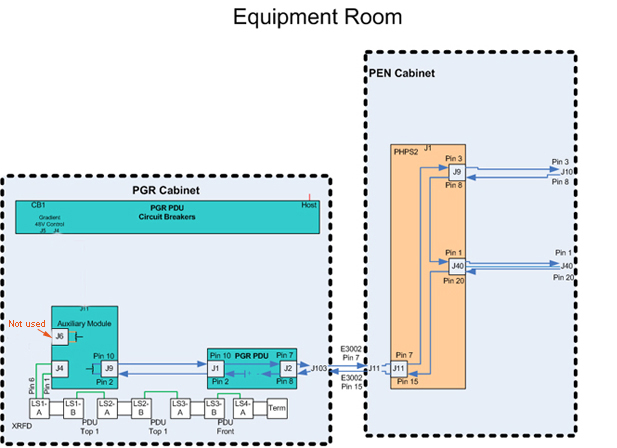
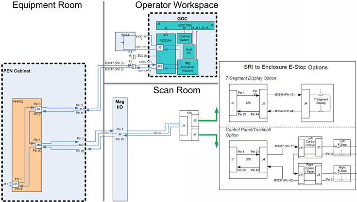
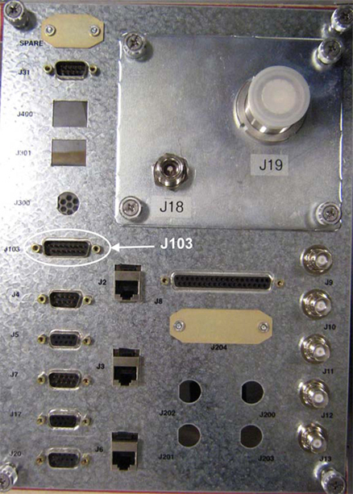
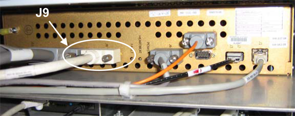
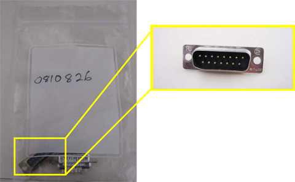
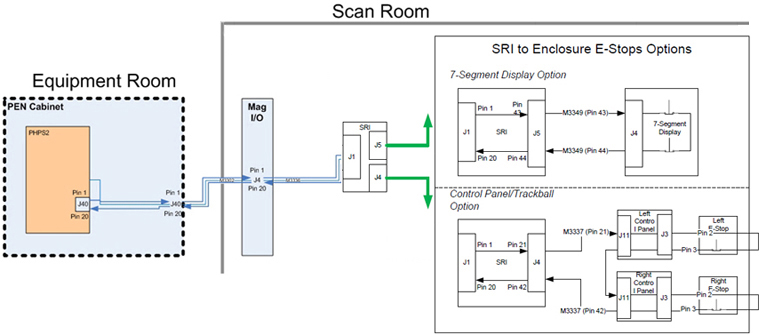

Operating Documentation
Direction 5670006, Rev# 1
Discovery MR750w GEM Service Methods
Module Version 15.0, Version Date 5/25/11
Operating Documentation |
| Required Persons | Preliminary Reqs | Procedure | Finalization |
|---|---|---|---|
| 1 | Not Applicable | Not Applicable | Not Applicable |
This document describes troubleshooting procedures for emergency stop errors. An error indicates an issue in the emergency stop circuitry. Troubleshooting the emergency stop circuitry consists of three functional areas: Equipment Room, Scan Room, and Operator Room. The two illustrations below provide the schematics.
See Illustration 1 and Illustration 2 for the schematics. To view all the block diagrams, refer to Interactive Block Diagrams.
Illustration 1: Emergency Stop Cabling - PGR Cabinet to PEN Panel

Illustration 2: Emergency Stop Cabling - PEN Panel to Workstation and Magnet Enclosure

| Item | Qty | Effectivity | Part# | Manufacturer | |
|---|---|---|---|---|---|
| 15-Pin Sub-D Female Jumper | 1 | - | - | - | |
| 15-Pin Sub-D Male Jumper | 1 | - | - | - | |
| Digital Multimeter | 1 | - | - | - | |
| ||||
| ELECTRICAL SHOCK HAZARD! | ||||
| CONTACT WITH CONNECTORS LEADING TO AN ENERGIZED POWER SUPPLY CAN CAUSE ELECTRICAL SHOCK. | ||||
| FOLLOW LOCKOUT/TAGOUT (LOTO) PROCEDURE WHILE PERFORMING SERVICES TO ELECTRICAL CONNECTION COMPONENTS. |
| Condition | Reference | Effectivity |
|---|---|---|
Power to the PGR Cabinet is turned off and LOTO procedures implemented. | - | - |
This test is performed to determine the condition of the emergency stop circuitry in the PGR Cabinet or the Magnet Enclosure.
Verify system has been shut down and LOTO for PGR PDU/Gradient Subsystem.
Disconnect Cable E3002 from Connector J103 (shown below) located on the connector panel on the top of the PGR Cabinet.
Illustration 3: PGR Cabinet Connector Panel

Connect 15-pin Sub-D female Jumper to J103 on the PGR Cabinet connector panel as shown.
Illustration 4: 15-Pin Sub-D Female Jumper

Restore power to the PGR Cabinet and remove LOTO.
Press the green [EMO Reset] button on the front of Power Distribution Unit (PDU) to reset the E-Stop circuit.
Verify operation of the E-Stop circuit, and confirm that the RF Amplifier and Patient Handling Power Supply (PHPS) powers on. (Refer to Illustration 5 for a flowchart of troubleshooting activities.)
If system seems functional and error disappears, perform Resistance Test.
If system is not functional and error still displays, perform Auxiliary Board Bypass Test.
Illustration 5: Troubleshooting Flowchart

This test is performed to determine condition of the emergency stop circuitry in the PGR Cabinet.
Verify system is shut down and LOTO for PGR PDU/Gradient Subsystem.
Disconnect Cable E3017 from Connector J9 (shown below) of the Auxiliary PWB Enclosure Assembly.
Illustration 6: Auxiliary PWB Enclosure Assembly

Connect the 15-Pin Sub-D male Jumper to Cable E3017 (shown below) from Connector J9 that was disconnected from the Auxiliary PWB Board in the above step.
Illustration 7: 15-Pin Sub-D Male Jumper

Restore power to the PGR Cabinet and remove LOTO
Press the green [EMO Reset] button on the front of the PDU to reset the E-Stop circuit.
Verify operation of the E-Stop circuit, and confirm that the RF Amplifier and PHPS powers on. (Refer to Illustration 5 for a flowchart of troubleshooting activities.
If the system is functional, perform a TPS Reset and check the error log for XGA fan faults. Check the operation of the fans in each XGA fan rack. (Auxiliary board failure is possible, but unlikely.)
If the system is not functional and the error does not disappear, check the auxiliary board cable. If it is good, replace the PDU Control Board.
This test is performed to determine condition of the emergency stop circuit.
Using a multimeter and check the resistance between Pins 7 and 15 of Cable E3002 (disconnected from J103 on the connector panel located on the top of the PGR Cabinet). Resistance should read 105k ohms or less.
If reading is out of range, proceed to the next step.
If reading is within range, reverify that the error message indicates an emergency stop issue. If it does, check Cable E3002 connectivity to J103.
Using a multimeter, verify the resistance between Pins 1 and 20 of Cable M3302 (disconnected from connector J40 on the PEN panel). Resistance should read 105k ohms or less. If reading is out of range, proceed to the next step.
Using the block diagram below as a guide, start at J40 of the PEN panel and work through the emergency stop circuit to each emergency stop enclosure, looking for the open circuit.
Illustration 8: PEN Panel to Magnet Enclosure E-Stop Block Diagram

Using a multimeter, check the continuity of emergency stop paths between the J9, J11, and J40 connectors on the PHPS. (Refer to the complete E-Stop diagrams located in the Power section of System Diagrams > Interactive Block Diagrams on the Service Methods DVD for relevant connector pins.
If reading is within range, proceed to the next step.
If reading is out of range, use the block diagram (shown below) as a guide and start at J10 of the PEN panel and work through the emergency stop circuit to the SCIM emergency stop, looking for the open circuit.
Illustration 9: PEN Panel to SCIM E-Stop Block Diagram

Using a multimeter, check the continuity of the emergency stop connections throughout the PHPS.
If connections are good, reverify that the error message is indicating an emergency stop issue. If it is, check Cable E3017 connectivity.
If connections are not good, replace the PHPS.
No finalization steps.